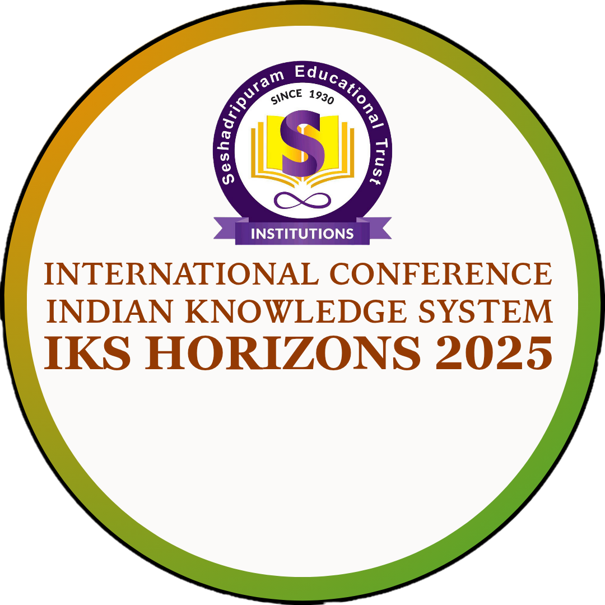

About Us
Seshadripuram Educational Trust (SET)

Guided by the motto "To Educate, To Empower, To Enrich," Seshadripuram Educational Trust (SET) has emerged as one of Karnataka’s premier educational institutions. Based in Bengaluru, SET manages 34 institutions spanning from Kindergarten to Ph.D. programs, including schools, colleges, research centres, and a global academy. With modern infrastructure, committed faculty, and a focus on holistic, value-based learning, SET provides opportunities for students from all walks of life. Over the decades, it has produced accomplished alumni across diverse fields, reflecting its enduring legacy of excellence and its mission to nurture individuals who contribute meaningfully to society.
Seshadripuram First Grade College (SFGC)
Established in 1992, with only one course (B.A.), the college, has grown phenomenally during the last 33 years. Now we offer undergraduate courses in Commerce, Management, Physical Science, Life Science, Computer Science and Business Data Analytics. Postgraduate course in Commerce and Management, Computer Applications and Bio-Technology. Research programs in commerce and Management The establishment of SFGC signaled a sea-change in the educational scenario of Bangalore and a boon, especially, to the aspirants from North Bangalore. Professionally managed by the SET, and affiliated to Bangalore City University, the college is managed by a Governing Council of Eminent Academicians and Management Experts who Benchmark Quality Targets and ensure that they are achieved by the College.
IQAC (Internal Quality Assurance Cell)
The IQAC ensures quality enhancement and sustenance in academic and administrative activities.
About AICTE

The All India Council for Technical Education provides technical leadership and ensures quality in professional education.
Indian Knowledge Systems (IKS)

The Indian Knowledge System (IKS) is a holistic framework that integrates traditional Indian wisdom with contemporary disciplines. It encompasses diverse domains such as Ayurveda, Mathematics, Architecture, Linguistics, Economics, and Ethics, offering sustainable and inclusive solutions for Global Challenges.
IKS Horizons 2025 (Conference)
"IKS HORIZONS 2025" aims to foster interdisciplinary dialogue rooted in the Indian Knowledge System, bridging ancient wisdom with modern innovation across Science, Technology, Humanities, Commerce, and Management. The Conference will feature Keynote Addresses, Paper Presentations, Panel Discussions, and Interactive Sessions.
Seshadripuram Research Foundation
Advancing research in traditional and modern sciences, fostering innovation and global knowledge dissemination.